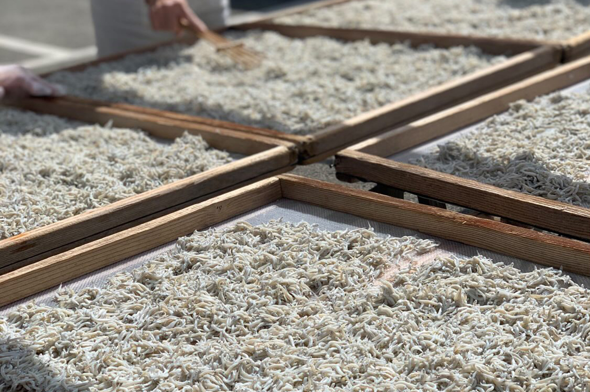
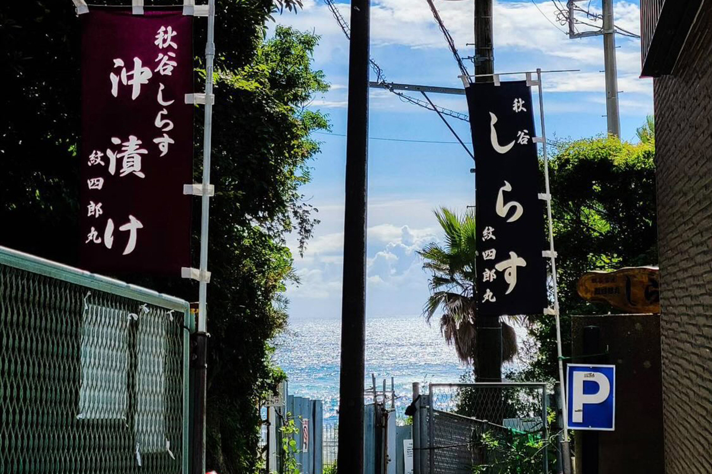
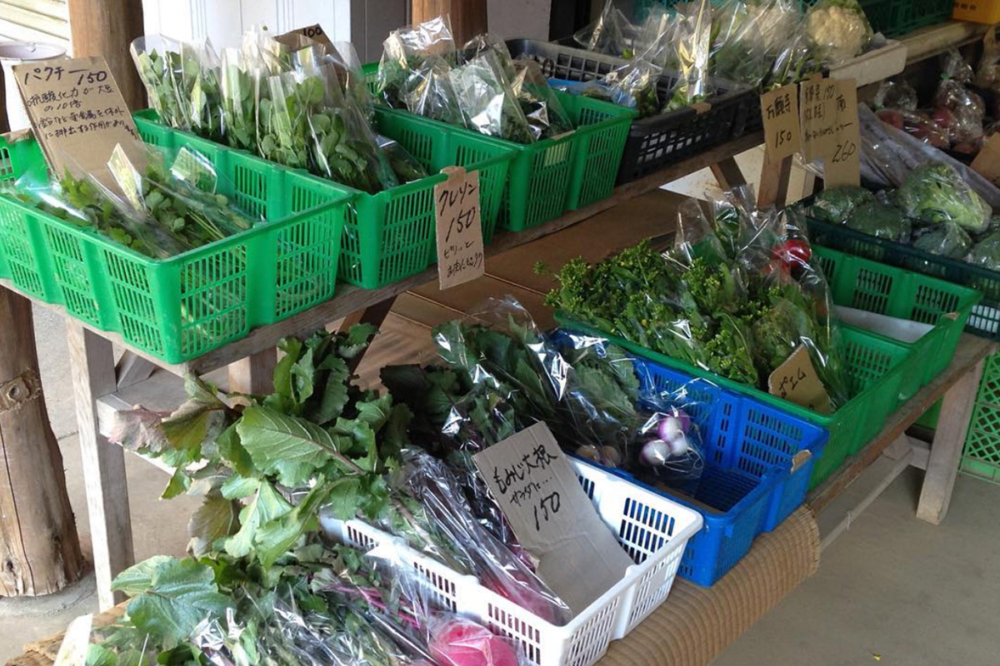
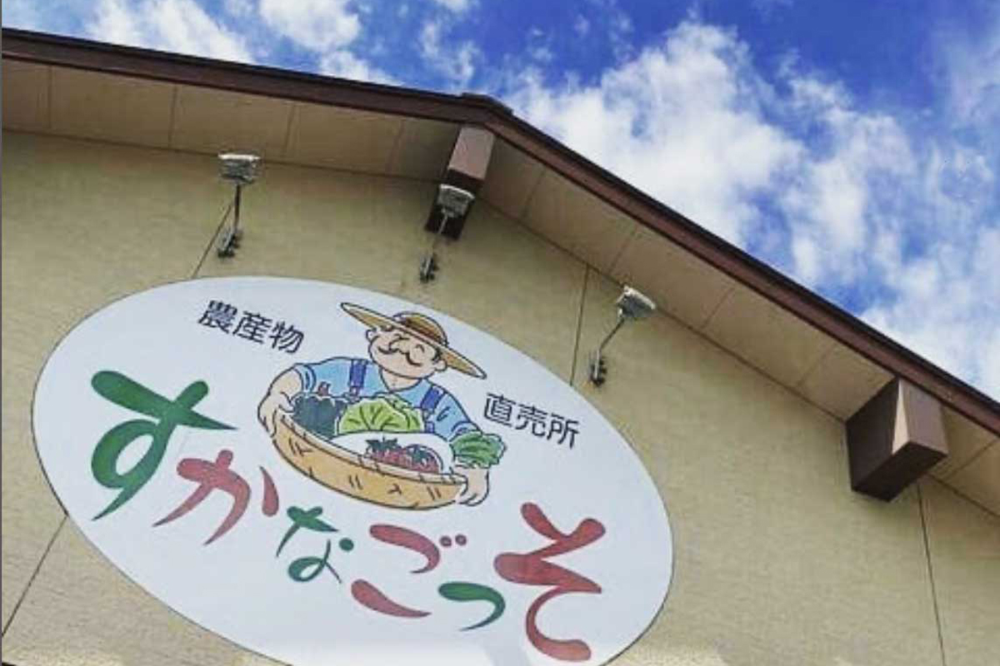
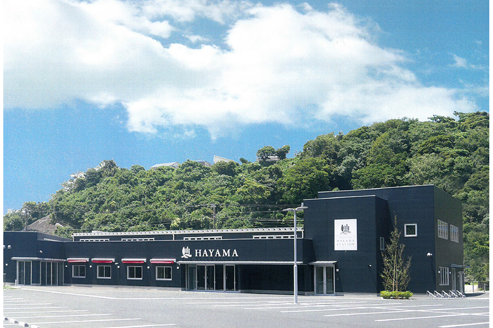
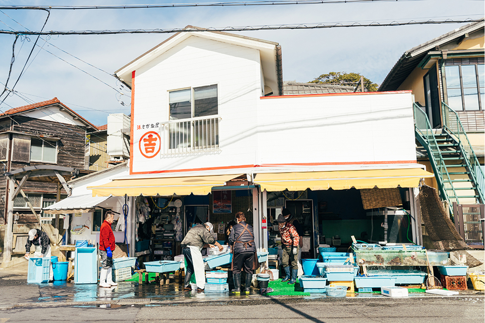
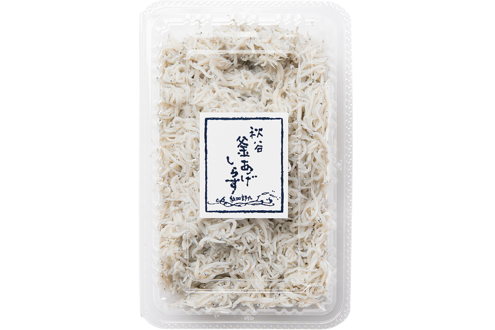

Префектура Канагава · полуостров Миура · еда
Овощи Миуры и сирасу из залива Сагами: куда за ними ездит кулинар с побережья

Самое вкусное обычно находится там, где его выращивают и ловят. Кулинар, которая больше двадцати лет живёт в доме с видом на залив Сагами, рассказывает, где на полуострове Миура покупать овощи, рыбу и сирасу.
Овощи
Лавки при полях
За двадцать лет до 2024 года кулинар уехала из большого города и поселилась на берегу залива Сагами, на западной стороне полуострова Миура. Что рыба у моря будет хорошей, она догадывалась. А вот то, что вокруг дома, если покружить по окрестностям, тут и там стоят маленькие овощные лавки при фермах, оказалось открытием.

Лавки эти небольшие, выбор в них скромный, зато на прилавках лежат овощи, собранные в тот же день: блестящие, с упругими листьями. Объезд лавок стал ежедневным делом. Постепенно оказалось, что у каждой свой характер: в одну стоит заехать подальше, в другой интересно поговорить с хозяйкой за прилавком. За брокколи кулинар ездит в одно место, за набором салатной зелени с травами в другое, и за покупками обычно объезжает две-три лавки. Одна из них стоит в деревне «Коясу-но сато»: там торгуют «Косугэ сэйка» и ещё одна семья фермеров.

Местные фермеры по просьбе здешних шеф-поваров пробуют выращивать редкие овощи, а ещё держат старые сорта, которые не попадают в городские магазины. Одной только редьки дайкон здесь бывает около восьми сортов: чёрная, красная, зелёная, белая, крупная и мелкая. Бобы «танокуро-мамэ», зелень «оканори», чайот «хаято-ури» кулинар знала на вкус, но дома никогда не готовила, поэтому каждый раз ждёт их сезона. Узнать у фермеров, как их лучше приготовить, для неё отдельная ценность.
«Косугэ сэйка», овощная лавка в «Коясу-но сато»
- Адрес
- префектура Канагава, Ёкосука, Акия, 3984-1
- Часы работы
- 9:30–16:00 (во вторник и пятницу с 11:00)
- Выходные
- понедельник, четверг
Рынок
«Суканагоссо» и HAYAMA STATION
Рынок «Суканагоссо» держит сельскохозяйственный кооператив Ёкосуки и Хаямы, и на его прилавках выстроены овощи фермеров со всей округи. Несколькими годами раньше 2024 года в Хаяме появился HAYAMA STATION: там продают местные овощи и мясо, готовые блюда и бэнто из ресторанов, сладости. Здесь собраны овощи сразу многих хозяйств, поэтому кулинар ездит и сюда, заодно пьёт кофе или покупает что-нибудь перекусить. HAYAMA STATION стоит удобно для тех, кто едет по скоростной дороге, и друзья, которым она его советует, всегда остаются довольны.

«Суканагоссо»
- Адрес
- префектура Канагава, Ёкосука, Нагаи, 1-15-15
- Телефон
- +81 46-856-8314
- Часы работы
- 9:30–18:00 (с ноября по февраль до 17:00)
- Выходные
- среда (в праздники открыто)

HAYAMA STATION
- Адрес
- префектура Канагава, уезд Миура, Хаяма, Нагара, 1583-17
- Телефон
- +81 46-876-0880
- Часы работы
- 9:00–19:00
- Выходные
- среда
Первые годы после переезда кулинар перед съёмками сажала команду в машину и устраивала ей тур: овощные лавки, рыбная лавка, птицеферма, где берут только что снесённые яйца. После работы лавки уже закрыты, поэтому иногда все собирались рано утром и отправлялись в маленькое путешествие. Со временем эти места выучили все, и гости закупаются сами, а к ней в дом приезжают уже с покупками.
Рыба
«Маруёси сётэн» у порта Садзима
Неподалёку от дома лежит порт Садзима, известный своим осьминогом, так что свежая рыба здесь всегда под рукой. Одна из лавок, где её покупают, «Маруёси сётэн». Поначалу кулинару было непривычно ходить к местным торговцам. Кацуо и тунец мебати, морской лещ, кинмэдай лежат у входа целиком или половинами. Такую большую рыбу по просьбе разделают на филе, но кусками её не продают. Мелкую ставриду и сардину берут по нескольку штук и чистят дома сами. Сначала всё это было в диковинку, и она старательно разделывала рыбу, варила живого осьминога, бралась даже за трепанга: сплошь первый опыт и одно удивление за другим.

Но рыбу каждый день не разделываешь, и рука долго не набивалась. Тогда нашёлся торговец, готовый выполнять просьбы. Кусками рыбу не продают и у него, зато он нарежет её на сашими или снимет только чешую и вынет внутренности. Больше всего кулинара тронуло, что хребет и голову после разделки он тоже кладёт в пакет. Так она учится каждый день: есть вкусно и ничего не выбрасывать.
«Маруёси сётэн»
- Адрес
- префектура Канагава, Ёкосука, Садзима, 2-14-7
- Телефон
- +81 46-857-2727
- Часы работы
- 8:00–около 16:00 (зависит от погоды)
- Выходные
- вторник (в праздники открыто, выходной переносится на соседний день)
Сирасу
«Монсиромару»: семья, которая ловит и варит рыбку
Последней была встреча с сирасу, мелкой молодью рыбы. В овощной лавке кулинару посоветовали обжарить длинный сладкий перец вместе с сирасу от «Монсиромару». Название было ей незнакомо, и с него начался её объезд лавок с сирасу. Перепробовав многие, она решила, что ей ближе всего сирасу «Монсиромару», и ходит туда почти каждый день.

Дома её едят так: на горячий рис кладут отварной сирасу больше, чем самого риса, и первую порцию едят без всего. Потом добавляют зелёный лук или имбирь, капельку соевого соуса, кунжутное или оливковое масло. А в конце «кама-тама»: сирасу «камааге» с сырым яйцом. Вкус меняют по ходу еды и едят от души.
Сирасу из одного и того же моря на вкус разная, всё зависит от обработки: соли и сушки везде по-своему. Это тоже открытие здешних мест, поэтому объезжать лавки с сирасу интересно. В шторм лова нет, а иногда спрашивают: «Сегодня сирасу „акахара“, ничего?» Акахара значит «красное брюшко»: рыбка наелась мелких креветок, и брюшко у неё покраснело. Покупатели, которые ждут белую сирасу, такую не любят.
В удачный день «Монсиромару» сначала отвозит улов в цех, пока он свежий, и снова выходит в море. Сирасу варит вся семья, остужает, а пока она сохнет, вручную выбирает из неё попавших в сеть мальков осьминога и кальмара. Глядя на эту работу, кулинар понимает, с какой заботой здесь обращаются с крошечной рыбкой.
«Местные овощи и местная рыба никогда не бывают одинаковыми. Как море и горы, они каждый день другие»
кулинар
«Монсиромару»
- Адрес
- префектура Канагава, Ёкосука, Акия, 1-8-5
- Телефон
- +81 46-856-8625
- Часы работы
- 9:00–16:00
- Выходные
- нерегулярно